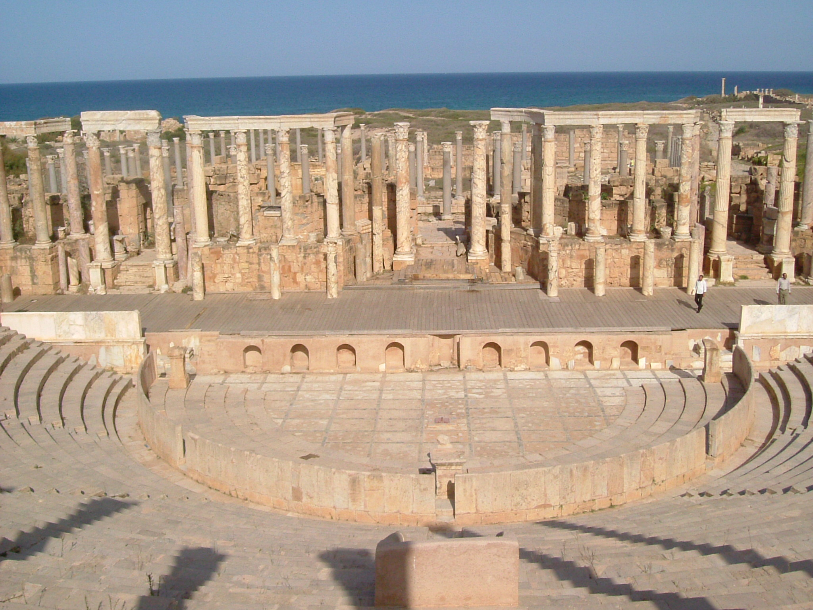

Socráticos
Cirenaicos

Introducción. Adaptarse a las circunstancias
La escuela cirenaica fue fundada por Arístipo de Cirene (aprox. -435 a -356). El nombre de la escuela proviene precisamente de esa ciudad, en el norte de Africa. Aunque las principales propuestas fueron sistematizadas por su nieto Aristipo el Joven, también llamado Metrodidacta.
Las principales características de esta escuela fueron la notable importancia que concedieron a la ética, marcada por un sensualismo hedonista y a una epistemología empírica y escéptica. Algunos de estos argumentos anticipan los que posteriormente propondrán epicúreos y escépticos, aunque con diferencias y es que las escuelas helenísticas tenían diversas inquietudes comunes, la forma en que cada una propone como resolverlas es lo que las diferencia.
En muy difícil seguir la evolución de esta escuela dado el escaso material con que contamos, pero parece ser, que si bien en un principio tenía cierta homogeneidad, los discípulos posteriores llegaron a replantear una parte importante de las doctrinas, provocando una serie de crisis y escisiones que aceleraron su temprano final.
Aristipo defendió el placer como el bien superior, pero igualmente defendió el ideal de autodominio de los instintos y el ejercicio de autosuficiencia y libertad personal para disfrutar de los placeres a nuestro alcance, sin dejarnos dominar por ellos. Lo importante es saber adaptarse a las circunstancias, saber disfrutar de lo presente y no pretender lo que no está a nuestro alcance.
Autodominio y adaptación a las circunstancias que sabían llevar con dignidad, según Diógenes Laercio, “solo a Aristipo le había sido dado llevar dignamente tanto una túnica como unos harapos” y Diógenes el cínico le calificó de "perro real".
Ética
El hedonismo es la característica principal, tanto de los cirenaicos como de los epicúreos. Cuando a lo largo de la historia, se cita el hedonismo, inmediatamente se le asocia con estas dos corrientes. Aunque tenían sus diferencias y no solo con los epicúreos, también con otros cirenaicos posteriores, que al final fue el principal detonante para su desaparición.Con los cínicos tienen en común el desprecio por las convenciones sociales.
Este hedonismo era para Arístipo, una parte de la forma de vivir. Nació en una familia pudiente, vivió una vida sin problemas económicos, dedicado a la búsqueda del placer. Para los cirenaicos el placer personal era el bien superior y además defendían que son preferibles los placeres corporales, que los mentales. La virtud consistía en disfrutar del placer, sin dejarse dominar por él. Como nos recuerda Diógenes Laercio, cuando a Arístipo le reprochaban su relación con una prostituta llamada Laida o Lais, respondía "yo poseo a Laida, pero no ella a mí".
El principal argumento para la defensa del placer, es que todos los animales buscan espontáneamente el placer y huyen del dolor. También los seres humanos instintivamente buscamos el placer y tratamos de evitar el dolor.
Para los cirenaicos el interés por el conocimiento estaba estrechamente relacionado con la práctica de la vida, aunque no rechazaron lo demás ya que dividen la ética en cinco partes: de los objetos que hay que desear y de los que hay que huir, de las sensaciones, de las acciones, de las causas y por último de las demostraciones. De éstas divisiones la consideración de las causas formaría parte de la física y la de las demostraciones de la lógica.
Los cirenaicos se diferencian de los epicúreos, que también buscaban el placer, en que, aunque los cirenaicos admiten que también hay placeres mentales prefieren los corporales a los que conceden el máximo valor. Los cirenaicos prefieren los placeres inmediatos sobre los placeres futuros, no se fían de que en el futuro podamos disfrutar como en el presente, porque puede que cambien los deseos, o que no estemos en ya en buenas condiciones o simplemente que hayamos muerto.
Epistemología
En teoría de cocimiento, los cirenaicos tienen una marcada tendencia al empirismo, junto con un cierto escepticismo. Se pueden encontrar puntos en común con los sofistas respecto del relativismo de la percepción y con los pirrónicos, matizando que para los cirenaicos se puede tener al menos un cierto conocimiento de nuestras experiencias.
Como empiristas toman como criterio de verdad las sensaciones personales y la propia experiencia. Las sensaciones además de criterio de verdad son también criterio para la práctica.
Su escepticismo proviene de la distinción que hacen entre las experiencias propias y lo que hace que tengamos dichas experiencias. Según los cirenaicos, podemos conocer nuestros estados sensibles, pero no los objetos que los originan, por tanto no podemos tener conocimiento del mundo externo
Pero la experiencia personal es subjetiva e intransferible, por esto no pueden ser comunicadas a los demás porque cada uno tiene sus propias afecciones. No podemos decir con seguridad que una misma cosa provoque una misma experiencia en dos personas distintas.
Como además no tienen ningún criterio externo para juzgar la corrección de dichas experiencias, asumen una relatividad respecto de las percepciones.
Una parte de su epistemología es de orientación sofística, pues no existe conocimiento fuera de nosotros. Para los cirenaicos no podemos conocer las cosas en sí mismas, pero experimentamos en nuestro cuerpo placer o dolor, es decir la afección de nuestra conciencia por las cosas. Fuera de nuestras propias sensaciones, no podemos saber nada del mundo.
Arístipo de Cirene
Aristipo, nació en Cirene, pero las fechas sobre su vida son bastante inciertas, (aprox. -435 a -356), aunque se sabe que en la fecha en que murió Sócrates, año -399, estaba en Egina, según cuenta Platón en el Fedón. Vivió en el seno de una familia pudiente y se trasladó a Atenas atraído por la fama de Sócrates de quien se hizo seguidor.
Aristipo tenía la fama negativa de ser el único socrático que cobraba por enseñar, práctica que era habitual entre los sofistas. Sin embargo se defendía diciendo que cobraba, no para su provecho, sino para que la gente sepa en que gastarlo.
Es conocido principalmente por su defensa del hedonismo, según él, placer es la última meta de nuestras acciones y que son preferibles los placeres corporales a todos los demás. Realizó numerosos viajes y se consideró un cosmopolita como tantos otros filósofos de la época helenística.
Despreció las convenciones sociales y tal vez por ello y también por sus frecuentes relaciones públicas con prostitutas, fue el centro de muchas historias escandalosas, la mayoría probablemente falsas.
Sin embargo Aristipo practicó el ideal de autodominio y nunca se dejó llevar por las pasiones. Supo adaptarse a las circunstancias y lograr la impasibilidad
Según Arístipo son tres los estados relativos a nuestros sentimientos: el sentimiento de dolor, el sentimiento de placer y un estado intermedio, por el que no sentimos ni dolor ni placer, semejante al mar en calma.
Otros cirenaicos
Arete y Aristipo Metrodidacta. Aristipo de Cirene transmitió sus conocimientos a su hija Arete, que se dedicó a la filosofía con una gran afición, y ésta a su vez, educó a su hijo Aristipo el Joven o también Metrodidacta, que quiere decir educado por su madre.
Aristipo el Joven puso en orden las doctrinas cirenaicas y es probable que algunas de las cuestiones más relevantes fueran trasmitidas como las sistematizó él mismo, aunque fueron planteadas inicialmente por su abuelo, tales como el placer como fin último o la definición de placer como movimiento.
Hegesias de Cirene, vivió entre los siglos -IV, -III, era conocido por su pesimismo. En Hegesias encontramos las primeras divergencias respecto de los cirenaicos anteriores. Opinaba que conseguir la felicidad es imposible a causa de la fragilidad del cuerpo y los vaivenes del destino, solo en contados momentos disfrutamos del placer, que además no depende de nosotros, por tanto es preferible buscar como evitar el dolor, mediante la indiferencia.
Según Hegesias, la vida y la muerte son preferibles por igual, la elección por una u otra resulta indiferente. Predicaba el suicidio convencido de que era lo mejor para el sabio, decía que la vida es un bien para el insensato, para el sabio es indiferente, por esta razón era conocido como el "consejero de la muerte". Tanto es así, que según algunos comentarios, el rey Tolomeo le prohibió que predicara sobre semejantes asuntos, porque parece ser que era capaz de persuadir a mucha gente para que se suicidara.
Anníceris de Cirene. Pasó un tiempo en la escuela cirenaica y después fundó su propia escuela.Anníceris y sus seguidores seguían considerando el placer como el bien superior, pero moderaron el acentuado egoísmo de sus predecesores, posibilitando el altruismo y concediendo un cierto valor a la amistad. Afirmaban que no hay un fin determinado para toda la vida, sino que hay uno propio para cada acción, pues el placer procede de la acción.
Teodoro de Cirene "el ateo" (siglo -IV), según algunas noticias es probable que pasara por varias escuelas antes de la cirenaica. Tenia algunos rasgos cínicos como la desvergüenza, la franqueza radical o el rechazo de las convenciones sociales. Todo esto unido a su ateismo, le ocasiono numerosos problemas con la sociedad de su tiempo, cosa que a Teodoro no debió importunarle demasiado. Fue maestro del cínico Bión de Boristenes, también ateo reconocido.Teodoro rechazaba toda noción de divinidad, dejó escrito un libro sobre este tema que habría tenido mucha influencia posteriormente en Epicuro. Teodoro introdujo algunas modificaciones en las teorías cirenaicas, consideró el placer como un estado de ánimo y no como las sensaciones placenteras. Aunque como bien superior puso la felicidad en lugar del placer.
Fragmentos
Estos fragmentos están tomados de los libros de Diógenes Laercio o Sexto Empírico (Adversus mathematicos) directamente en algunos casos y en otros están sacados del libro de Rodolfo Mondolfo. Pretenden mostrar algunas opiniones significativas de esta escuela y de sus personajes.
- Análogamente, a las cosas expresadas respecto a los criterios de verdad, aparecen también las dichas con respecto a los fines del obrar, pues las sensaciones se extienden también a los fines. Las sensaciones son criterios y fines de todas las cosas: vivimos siguiéndolas, buscando la evidencia y la satisfacción, la evidencia en las otras sensaciones, la satisfacción en el placer. (Sexto)
- La ausencia del dolor no les parece a ellos placer, como (después) ha sido dicho por Epicuro, ni tampoco la falta del placer dolor. Porque éstos, están ambos en el movimiento, y la ausencia del dolor o del placer no es movimiento, sino algo semejante al estado del durmiente. (Diógenes)
- Dicen que las cosas dolorosas, cuyo fin es el dolor, son males, las placenteras, bienes, cuyo fin es el no engañoso placer; las intermedias, ni bienes ni males, cuyo fin no es ni bueno ni malo, es decir, una sensación intermedia entre placer y dolor. (Sexto).
- No daba valor ni al recuerdo de los goces experimentados en sí mismo en el pasado, ni a la esperanza de los futuros, sino que juzgaba que el bien se halla sólo en el presente, y no estimaba nada en absoluto, el haber gozado o el estar por gozar, el uno porque ya no es más, el otro porque no es todavía y no aparece. (ATHEN., XII)
De Aristipo: - Aristipo era natural de Cirene. Fue el primer discípulo de Sócrates que enseño la filosofía por estipendio. (Diógenes)
- Su genio se acomodaba al lugar, al tiempo y a las personas, y sabía simular toda razón de conveniencia. (Diógenes)
- (...) pues así como sabía disfrutar de las comodidades que se ofrecían, así también se privaba sin pena de las que no se ofrecían. (Diógenes)
- Instruía a su hija Areta con excelentes máximas, acostumbrándola a despreciar todo lo superfluo. (Diógenes)
- Que los deleites del cuerpo son muy superiores a los del ánimo, y muy inferiores las aflicciones del cuerpo a las del ánimo. (Diógenes)
- Poseo pero no soy poseído, pues el dominar los placeres y no dejarse dominar por ellos es cosa óptima y no el abstenerse de ellos. (Diógenes).
De Hegesias: - Que una vida del todo feliz es imposible, pues el cuerpo es combatido de muchas pasiones. (Diógenes)
- Que al ignorante le es útil la vida, al sabio le es indiferente. (Diógenes)
- El sabio no realiza ninguna obra sino para sí mismo, pues no estima digno a ninguno así como a sí mismo. Pero decían que los pecados merecen perdón, pues ninguno peca voluntariamente, sino constreñido por alguna pasión. Y por ello no debe ser odiado, sino educado. (Diógenes)
<- Atrás